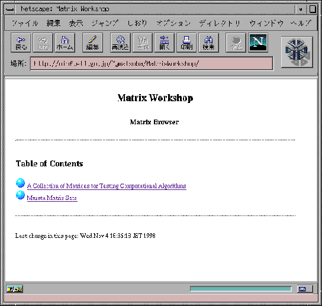

<!DOCTYPE HTML PUBLIC "-//W3C//DTD HTML 3.2 Final//EN">
<!-- Converted with jLaTeX2HTML 98.1p1 release (March 2nd, 1998) + JP patch 2.0 (March 16th, 1998)
patched by Kenshi Muto (mutou@three-a.co.jp), Three-A Systems,Co.,Ltd.
LaTeX2HTML 98.1p1 release (March 2nd, 1998)
originally by Nikos Drakos (nikos@cbl.leeds.ac.uk), CBLU, University of Leeds
* revised and updated by:  Marcus Hennecke, Ross Moore, Herb Swan
* with significant contributions from:
  Jens Lippmann, Marek Rouchal, Martin Wilck and others  -->
<HTML>
<HEAD>
<TITLE>$B9TNs9)K<(B</TITLE>
<META NAME="description" CONTENT="$B9TNs9)K<(B">
<META NAME="keywords" CONTENT="report">
<META NAME="resource-type" CONTENT="document">
<META NAME="distribution" CONTENT="global">
<META HTTP-EQUIV="Content-Type" CONTENT="text/html; charset=iso-2022-jp">
<LINK REL="STYLESHEET" HREF="report.css">
<LINK REL="next" HREF="node13.html">
<LINK REL="previous" HREF="node2.html">
<LINK REL="up" HREF="report.html">
<LINK REL="next" HREF="node10.html">
</HEAD>
<BODY >
<!-- Navigation Panel -->
<A NAME="tex2html111"
 HREF="node10.html">
</A> 
<A NAME="tex2html109"
 HREF="report.html">
</A> 
<A NAME="tex2html103"
 HREF="node8.html">
</A>   
<BR>
<STRONG> Next:</STRONG> <A NAME="tex2html112"
 HREF="node10.html">$B35MW(B</A>
<STRONG> Up:</STRONG> <A NAME="tex2html110"
 HREF="report.html">``Software Repository''$B$K$*$1$k%G!<%?$N<h$j07$$(B  </A>
<STRONG> Previous:</STRONG> <A NAME="tex2html104"
 HREF="node8.html">$BMxMQ<T$X$N%$%s%?%U%'!<%9(B</A>
<BR>
<BR>
<!-- End of Navigation Panel -->

<H1><A NAME="SECTION00030000000000000000">
$B9TNs9)K<(B</A>
</H1>

<P>
<BR>
<DIV ALIGN="CENTER"><A NAME="78">&#160;</A>
<TABLE WIDTH="50%">
<CAPTION><STRONG><a name="figure2">$B?^(B2</a>:</STRONG>
$B9TNs9)K<(B[<A
 HREF="node13.html#mw:url">4</A>]</CAPTION>
<TR><TD></TD></TR>
</TABLE>
</DIV>
<BR>
<P>
<BR><HR>
<!-- Table of Child-Links -->
<A NAME="CHILD_LINKS">&#160;</A>
<UL>
<LI><A NAME="tex2html113"
 HREF="node10.html">$B35MW(B</A>
<LI><A NAME="tex2html114"
 HREF="node11.html">$B%G!<%?7A<0(B</A>
<LI><A NAME="tex2html115"
 HREF="node12.html">$B%$%s%?%U%'!<%9(B</A>
</UL>
<!-- End of Table of Child-Links -->
<BR><HR>
<ADDRESS>
Masao Takaku
$BJ?@.(B11$BG/(B3$B7n(B16$BF|(B
</ADDRESS>
</BODY>
</HTML>
